Виктория — художник. Живопись, графика, иллюстрация
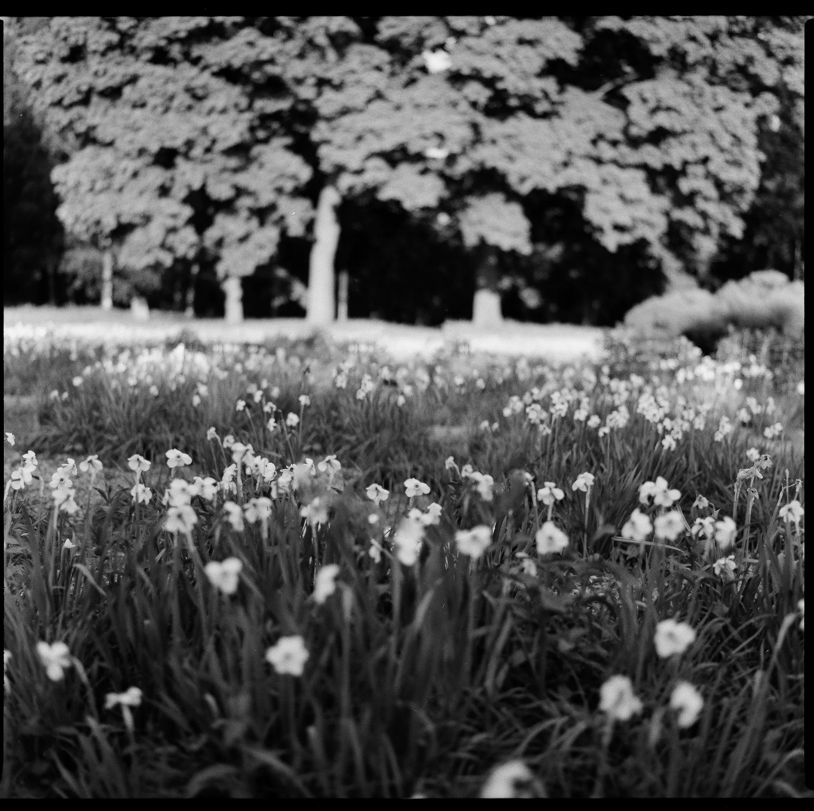
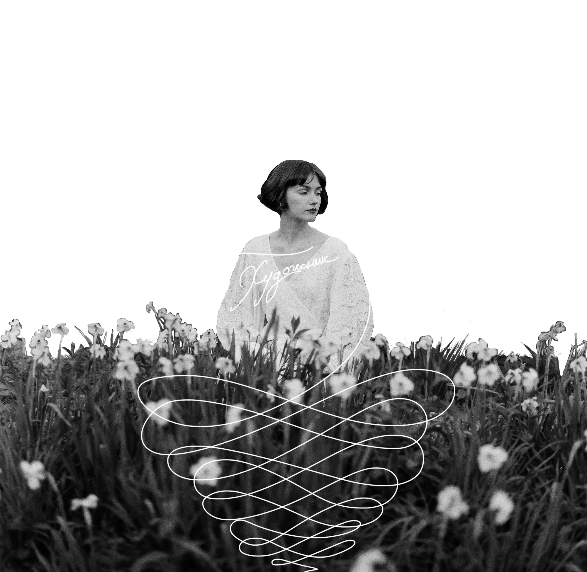
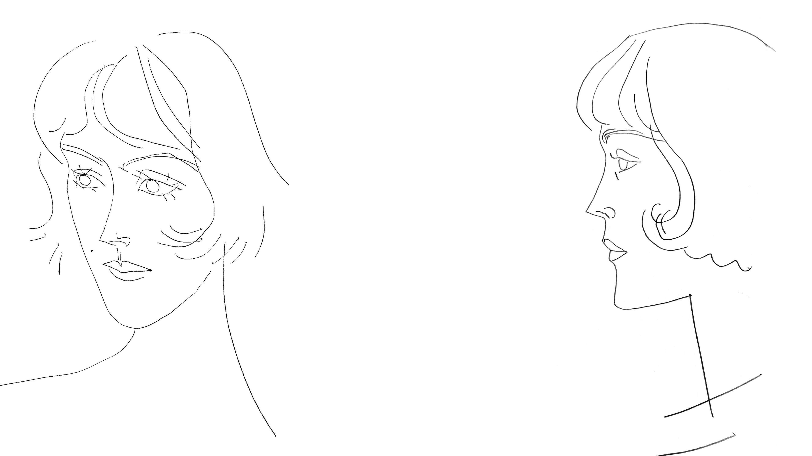
ПРО МЕНЯ
Моё имя Виктория. Я художник. В своих работах я отталкиваюсь от себя. Мне интересен эффект привычного, бытового и понятного. Как человека формирует что-то простое и красивое.
Моё кредо в искусстве — приумножать прекрасное вокруг меня. Когда все вокруг ищут новые смыслы — я хочу разобраться со старыми.
Виктория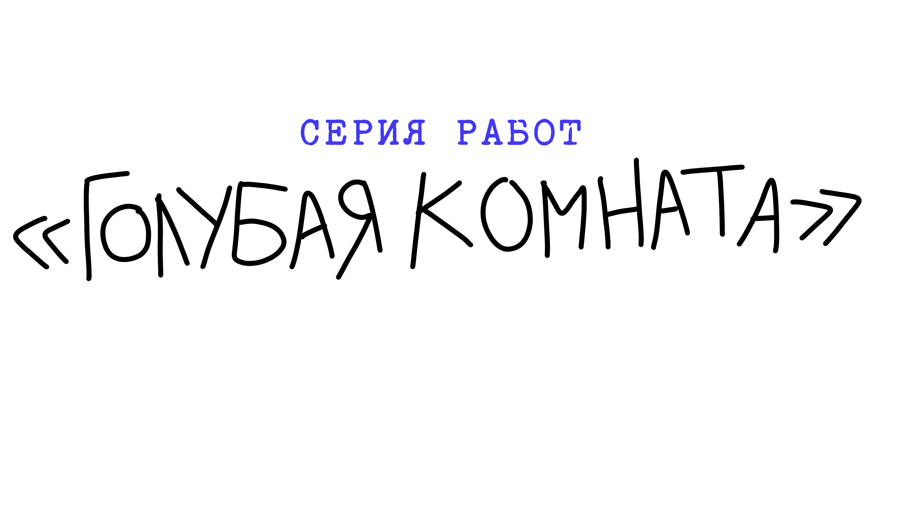
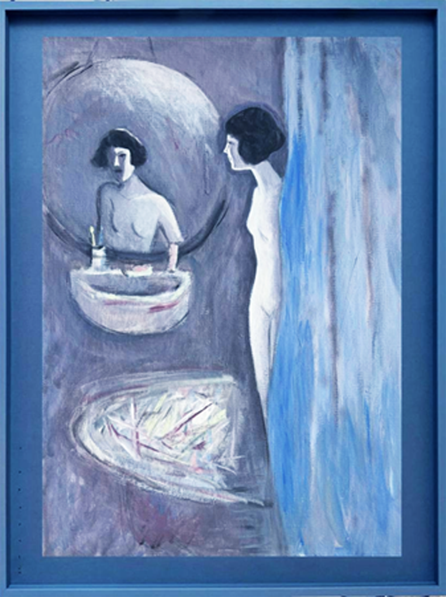
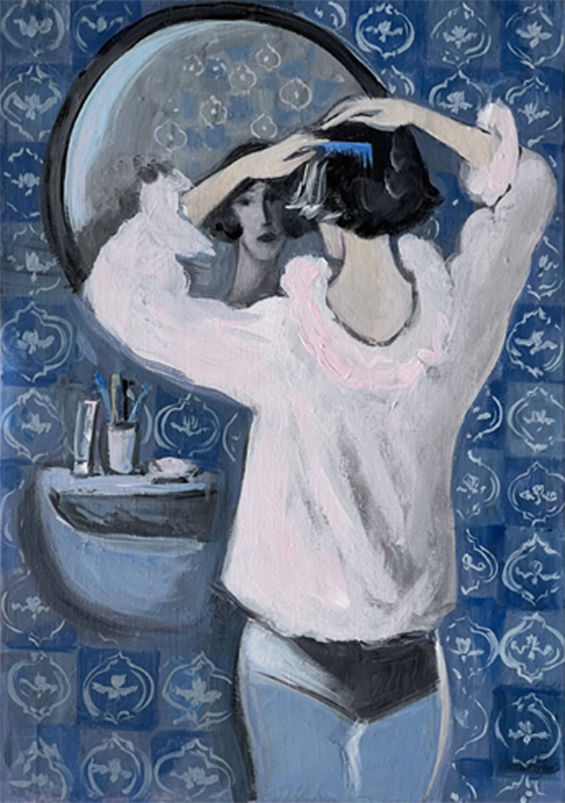
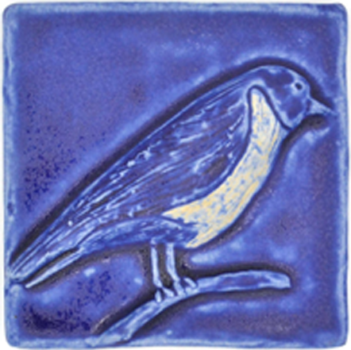
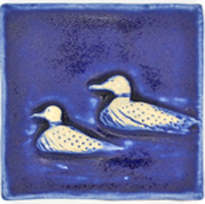
Как бытовое пространство из интимного превращается в одиночество? Где начинается единение с собой? Когда ванная комната перестаёт быть обычной и повседневной?
Наведите, чтобы раскрытьArtist
Statement
В моей художественной практике я работаю с темой опыта переживания.
Выбирая техники классической живописи и графики я обращаюсь к бытовым сюжетам, которые обостряю новым взглядом на привычные вещи.
Большую роль в моих работах имеет текст, инсталляция, работа с целой серией. Мои интересы сосредоточены вокруг театрального жеста, анимационного движения, документальности гравюры.
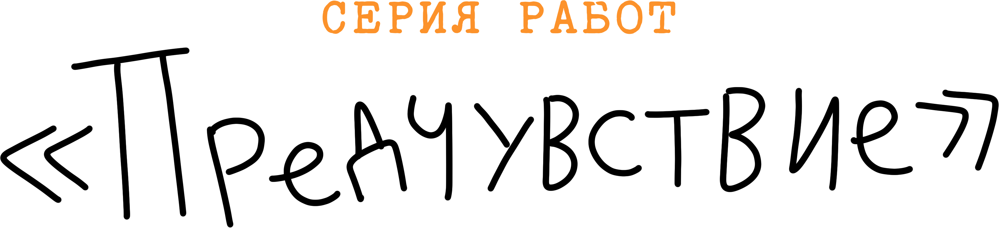
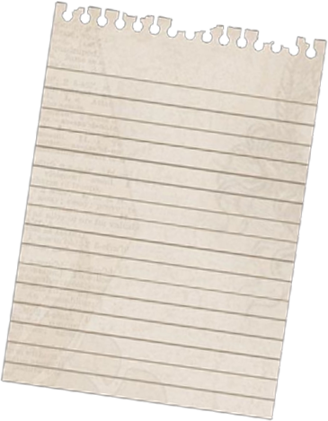
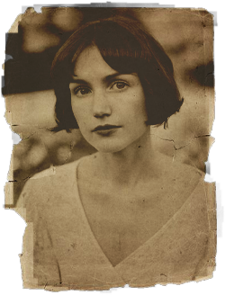
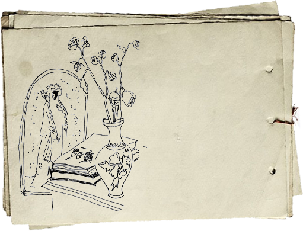
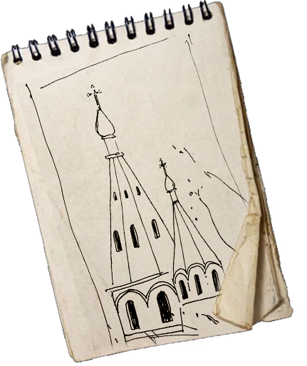
Записные книжки, обрывки фраз и осколки воспоминаний. Почему мы собираем физическую память? Что остаётся в конце от того, что мы увидели и запомнили?
Наведите, чтобы раскрытьСтена
Работы, которые можно унести домой. Проданные остаются на стене — гвоздём и невыгоревшим следом.
ОтправкаИз Москвы по всему миру. Оригиналы — в жёстком тубусе или коробе.
СрокиРоссия 3–7 дней, международная 10–21 день.
ОплатаОбсуждаем в переписке — перевод или карта.
Связаться
* Instagram принадлежит компании Meta, признанной экстремистской организацией и запрещённой на территории Российской Федерации.